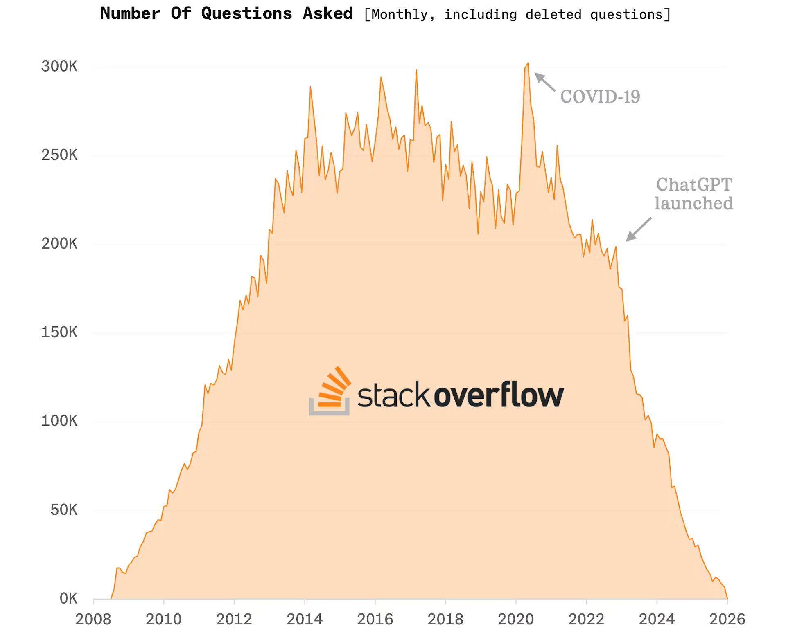
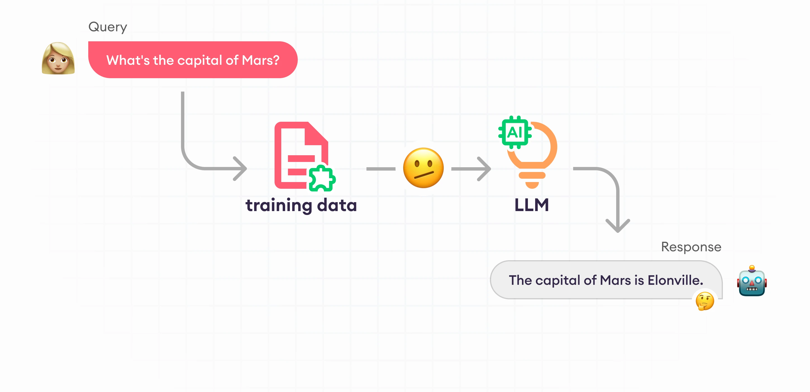
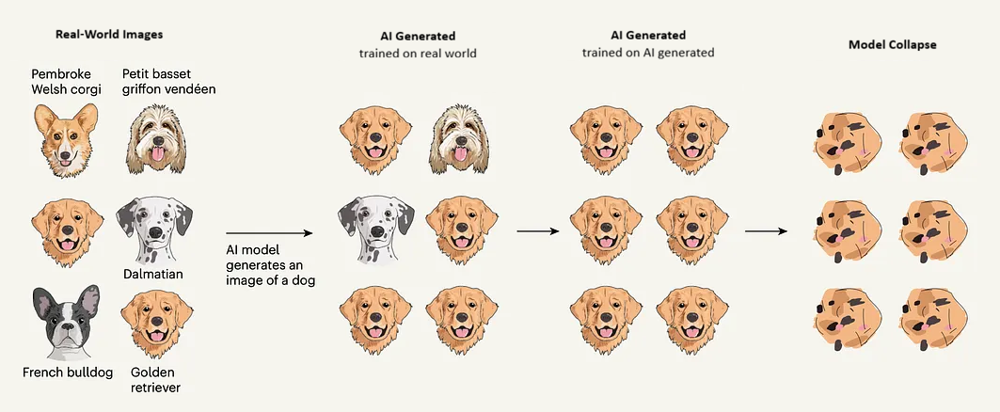
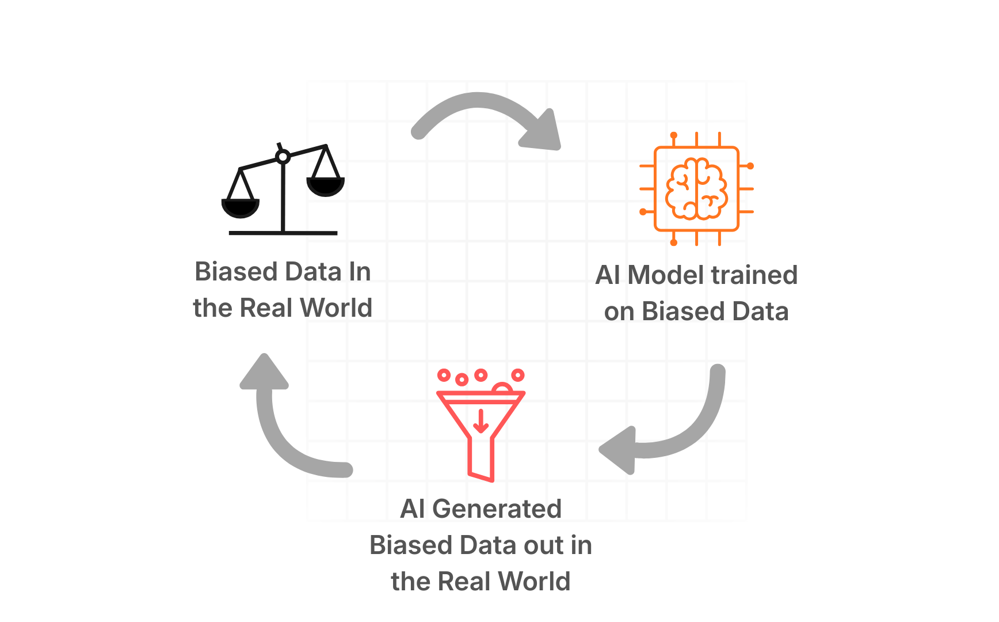
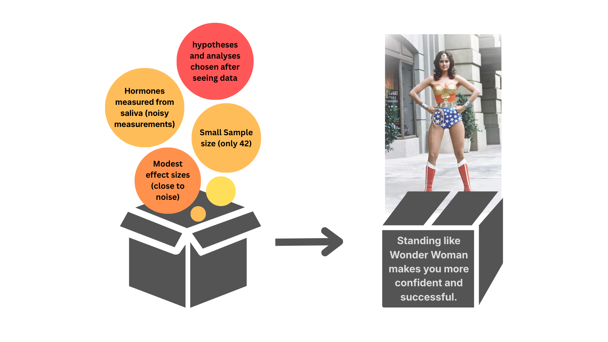

AI tools are all the rage now, enabling the humble individual to create Ghibli-style art, single-handedly build mobile applications, and generate 1200-word blog posts for college assignments within minutes. It is undeniably powerful. But with great power comes… great amounts of paperwork? We often see debates around commercial AI being trained on publicly available data, and many wonder why people create “unnecessary” hurdles that seem to slow technological progress.
🔁 The AI feedback loop and Model Collapse
Stack Overflow recently recorded a record low number of questions asked, as low as its launch 18 years ago. With AI copilots embedded directly into coding environments, developers no longer need to wait for another human to interpret their question and respond. Ironically, Stack Overflow now thrives by selling AI add-ons powered by the very millions of human-written questions and answers it once depended on (News 2025).

This raises a troubling feedback loop: if people stop contributing original knowledge, the data source that trains future models begins to dry up. Training AI on AI-generated content risks “model collapse,” where errors, biases, and oversimplifications compound over time. Rare bugs, niche libraries, and genuinely novel problems still require human collaboration and creativity, not pattern remixing. Users of such AI tools frequently encounter problems of the AI “hallucinating” when it makes up information instead of saying “I don’t know”. When the user is not familiar with the topic they might not be able to pinpoint when this happens and get completely wrong information.

The same tension exists in AI-generated art. Artistic choices are deeply intentional and personal. Treating this creative labor merely as raw material for a commercial product risks stripping it of context, authorship, and meaning.
Studies have repeatedly shown how, due to the large amount of AI art now being publicly available, new AI is being trained on existing AI art and the results are getting worse- another example of “model collapse”. This is a long diagnosed problem, as sometimes deliberate noise is added during training to mitigate it (Bishop 1995). Model collapse is especially noticeable in image-generating models as the image output decreases in quality, diversity and precision.

Model collapse starts from the tails, which can lead to rare cases being omitted entirely from subsequent models. Eg. The diagnosis of a rare disease. Then the biases progressively get amplified, until only the average, the supposed “best representation” remains. Once the training data looses its diversity, the model looses its ability to learn anything meaningful either. (IBM 2025)
This is why crediting data sources and respecting intellectual property is not optional. It acknowledges the human creators without whom AI would have nothing to learn from. AI can only generate; it never truly creates. Under the current over-abundance of data, AI is silently killing its source, which can suddenly cause all AI infrastructure to collapse.
🧽 The AI sponge in dirty water
Another common fact in the AI sphere is that the AI model is as good as the data is trained on. The AI, like a sponge, will absorb everything as it is given, including any biases. And thus we have another problem, which is also compounded by repeated training. All data reflects the values, power structures, and blind spots of the societies that produce it. For example, language models trained on internet text may also reproduce gender stereotypes or associate certain professions with specific ethnicities (University of Toronto Libraries 2025). Deciding what counts as “bias” is itself a value judgment, raising the question: who gets to define fairness, and whose perspectives are prioritized or erased?
If this fact is not taken into account in the real world, a number of problems can spring up. A model’s prediction could end up becoming a “self-fulfilling prophecy” if the results are blindly trusted and put out in the world, where more AI models train on this data and perpetuate the bias further.

But why is it so hard to remove? Models store words as embeddings, which is just a fancy way of saying that words are converted to a series of numbers, which are stored relative to other words, and inherently have no meaning. Similar words such as “hat” and “cap” will be “closer” to each other while different words like “lollipop” and “spreadsheet” will be further apart. In addition to this, you could also “subtract” words from other words to get something meaningful like the following. Man is to woman as king is to queen. \[ \overrightarrow{\text{man}} - \overrightarrow{\text{woman}} \;\approx\; \overrightarrow{\text{king}} - \overrightarrow{\text{queen}} \]
While many such analogies make sense, this also means that the foundation of words themselves can easily carry biases too, like:
- He is to carpentry as she is to sewing
- Father is to doctor as mother is to nurse
- Man is to computer programmer as woman is to homemaker (Bolukbasi et al. 2016)
While embeddings can still be interpreted by humans and thus we can implement methods to combat this bias, as we move of to Large Language Models and Transformer-based systems, they become much more complicated to identify, much less remove. Thus we always have to be vigilant about such things existing out in the wild.
🕵️ Whodunit? Accountability in the AI sphere
So does this discussion mean that the content generated by AI is owned by the producers of the dataset? The AI chatbot Grok was recently criticized for being used to generate sexually explicit content involving minors, drawing scrutiny from multiple governments. (CNBC 2026) This begs the question: If harmful content is produced, who is liable? the dataset sources, the model developers, or the prompt writer? The boundaries between data collector, IP holder, and AI user are increasingly entangled.
One might argue that the AI model is just a tool which is being used by the human giving it the prompt. One might even argue it is the bias in the data that pushes the AI model to do questionable things, and it is the fault of the real world data. But in reality, using certain tools is fundamentally different from others. If you sit down to write an article about “How women do not belong in the workforce” and use a document software like MS Word, Word might fix your spelling and grammar errors, but it will not contribute meaningfully to your article to make it more legitimate. Searching on Google might land you on many pages filled with people agreeing with you. But you always actively choose to go and interact with these people, and the differences between a trusted study and a random social media comment are apparent. But encountering the same topic with a chatbot blurs all these lines and does little to distinguish between all the sources. It is up to the chatbot to interpret the legitimacy, and whether it chooses to convey the fact with the required gravity. It could oversimplify topics with many caveats, make obscure opinions seem commonplace, and in an effort to agree with the user it could falsify or make up information. In such cases it will be extremely hard to then track it down. The AI tool is an intelligent tool, and comes with its own biases, which can either contrast or compound the user’s bias. We cannot treat it as “just another tool”, and we need to critically analyse the data it is being trained on.

But all is not lost yet. In fact, having such conversations is the first step to starting to fix the problems that are associated with AI tools. Similar to how we now have rules regarding net neutrality, we can address these with open dialogue and critical thinking. The process should include crediting and citing data, vetting of data, bias removal, and even if bias is not removed completely, it should be understood and the user should be cautioned toward it, and finally the laws governing the use of these AI tools should be firmly and clearly established. We should not underestimate the value of the human-in-the-loop!
AI is powerful in making complex topics simpler and digestible, and making powerful tools accessible. In the fairy-tale world of AI we might forget the complex reality behind it all. We have to be aware of the implications of the tool we use, and seemingly, with great power, does come great responsibility.